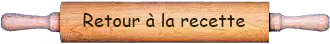

Le craquelin c'est quoi? Le craquelin est une pâte à base de beurre, sucre et farine, qu’on va poser par-dessus notre pièce de pâte à choux avant la cuisson. Et ça a deux gros avantages : On a peu de chance de louper les choux avec un craquelin. Mais, c’est aussi un coût supplémentaire, du temps supplémentaire et ça change l’aspect. La recette La recette, elle est très simple : Travaillez le beurre pommade avec la cassonade, ajoutez la farine et étale la pâte entre deux feuilles de papier cuisson sur environ 2mm. | |||
|  | |||
|---|---|---|---|